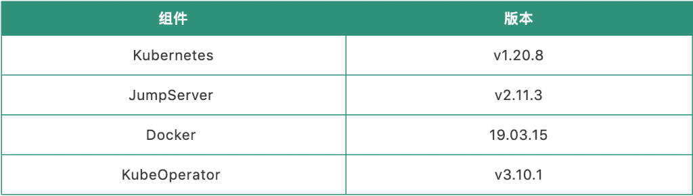
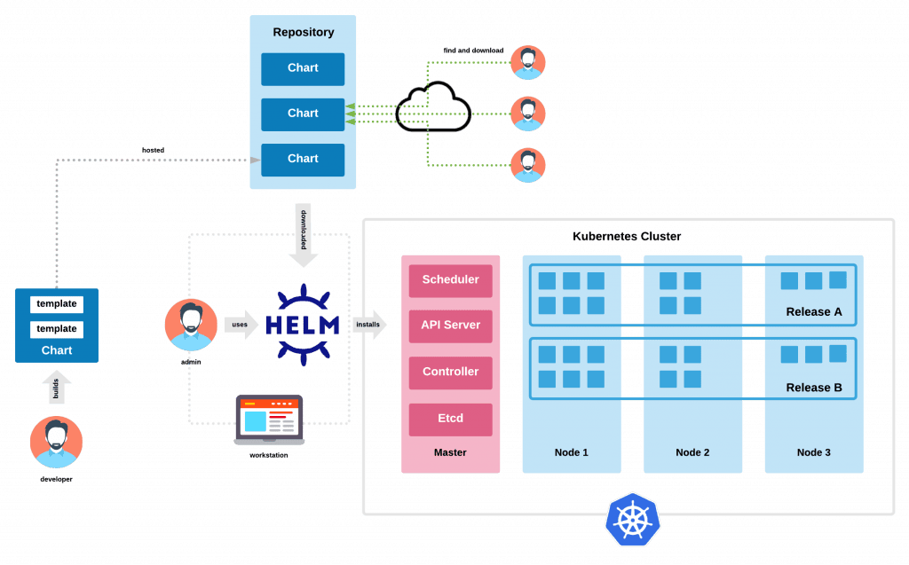

在8月25日的直播中，我们给大家实际演示了在Kubernetes集群上快速部署JumpServer的全过程。作为全球首款完全开源的堡垒机，容器化部署一直是JumpServer堡垒机的特色功能之一。
基于本次直播，我们为大家整理了JumpServer容器化部署的操作文档，旨在为广大用户的实际操作提供指引。《在Kubernetes集群上快速部署JumpServer》直播回顾请访问 ：
https://live.vhall.com/v3/lives/subscribe/236412036。
JumpServer部署方式
■ 单机模式
单机部署是指所有的服务（包含数据库服务）都部署在一台虚拟机或者主机上。所有的数据没有备份，需要手动做好数据库的定期备份。此模式适用于一般开发测试环境，仅为满足审计要求，采用单台一体机等；
■ 主备模式
主备部署是指所有的服务（包含数据库服务）都采用主备模式进行部署。该模式能够保证节点故障自动切换，MySQL的主配置简单，故障恢复技术难度较低，一般适用于生产环境要求高可用，资产数量和并发数不多，故障无缝切换的场景；
■ 集群模式
集群模式是基于主备模式基础上的升级版，是指所有的服务（包含数据库服务）均采用分布式进行部署，包含MySQL、Redis等。该模式一般适用于大规模资产场景、高并发要求的高性能场景、混合云/多DC/分支机构场景等；
■ Kubernetes模式
此种模式一般适用于用户拥有Kubernetes环境，用户其他业务的容器均通过Kubernetes进行编排的场景。或者是容器很多、业务庞大，存在困难的编排、管理和调度问题时也可以考虑通过Kubernetes部署来统一管理JumpServer。
在Kubernetes环境下部署JumpServer
1. Kubernetes部署的优劣势
■ 优势
不再需要有专门的高可用方案，Kubernetes集群自身可以完美解决这点。扩容也不需要人工操作，Kubernetes Deployment的HPA可以解决。Kubernetes部署可以根据CPU、内存使用率等参数进行自动扩展。
JumpServer需要具备高流量的处理能力，标准容器部署无法很好地解决这一点。Kubernetes自身的特性可以让堡垒机实现快速扩容，处理大流量。
■劣势
需要对Kubernetes有一定了解，JumpServer的可用性依赖于Kubernetes集群，需要同时保障JumpServer和Kubernetes的可用性。
2. 部署方案
■ 存储方案
常用的存储有CephFS、Cinder、NFS等网络共享存储类型，或者公有云提供的存储卷类型，譬如Azure公有云提供的AzureDisk、AzureFile，AWS的Elastic BlockStore等。
使用公有云提供的存储卷，维护起来比较方便，网络共享存储需要自己搭建环境并维护。JumpServer没有特别要求。本次Kubernetes部署使用的是NFS网络共享存储。
■ 网络方案
Kubernetes的网络模型假定了所有Pod都在一个可以直接连通的扁平网络空间中。这是因为Kubernetes出自Google，而在GCE（Google Cloud Platform）中是提供了网络模型作为基础设施的，所以Kubernetes就假定这个网络已经存在。
开源组件支持容器网络模型，包括Flannel、Calico等。由于Calico是根据IPtables规则进行路由转发，并没有进行封包、解包的过程，这和Flannel比起来效率就会更快一些。本次Kubernetes部署暂未考虑效率问题，使用的是Flannel网络插件。
■ 镜像仓库方案
在Kubernetes集群中，容器应用都是基于镜像启动的。在私有云环境下建议搭建私有云镜像库对镜像进行统一管理，在公有云环境中可以直接使用云服务商提供的镜像库。
私有镜像库有两种选择：
Docker提供的Registry镜像库，可以参考官网的相关说明；
-
Harbor镜像仓库，可以参考官网的相关说明。
Docker提供的Registry镜像库在国外，传输不稳定。Harbor是在Docker Registry上进行了相应的企业级扩展，从而获得了更加广泛的应用。这些新的企业级特性包括：管理用户界面，基于角色的访问控制，AD/LDAP集成以及审计日志等，足以满足基本的企业需求。由于本次是实验环境，所以镜像都是在本地。
3. 部署环境简介
操作系统为CentOS7系统或者以上，CPU和内存推荐4Core、8GB或者以上，硬盘容量推荐200GB或者以上，主备模式或者集群模式，需要VIP。Kubernetes版本建议大于等于v1.18版本，存储选择NFS网络共享存储。
■ 部署环境说明

■ 虚拟机服务器信息

■ 部署Kubernetes集群（注：如已经有Kubernetes环境可忽略此步骤）
部署Kubernetes集群推荐使用KubeOperator，可自动完成生产级别的Kubernetes集群部署。KubeOperator详细使用步骤可参考官方文档：
https://kubeoperator.io/docs/index.html。
4. 部署步骤
① 创建Kubernetes集群，若已经准备好Kubernetes集群，可跳过此步骤。
将准备好的服务器录入到KuberOperator的“主机”列表后，在“集群”页面创建Kubernetes集群 。详细步骤参考官方文档：
https://kubeoperator.io/docs/index.html 。
② 准备NFS Server
■ 进入NFS主机安装NFS
yum install nfs-utils nfs4-acl-tools portmap■ 配置挂载目录
# vi /etc/exports
/nfs-share 172.16.0.0/16(rw,sync,no_root_squash)
# 重新加载
exportfs -ra■ 查看状态
systemctl status nfs③ 创建StorageClass
本次环境将使用NFS为Kubernetes集群提供持久化存储服务。通过KubeOperator创建StorageClass非常简单，可在Web页面完成StorageClass的创建。若需要使用其他类型的存储方案，可参考Kubernetes官方文档：
https://kubernetes.io/docs/concepts/storage/storage-classes/。
④ 部署JumpServer堡垒机
在Kubernetes集群上部署应用的传统方式是创建各种资源类型YAML文件，但是对于一个复杂的工程部署起来会非常的麻烦，并且难以维护。此时我们可以使用Helm/Chart进行应用的安装。使用Helm/Chart的好处在于我们不必为每个应用程序手动编写单独的YAML文件，只需创建一个Helm Chart就可以将应用部署到集群。
备注：以下操作均在Kubernetes的Master节点进行操作。
■ 准备Helm Chart
JumpServer官方已经提供了Chart文件，我们只需要将项目下载到本地，略做修改之后便可以使用。
# 克隆 JumpServer helm/chart 代码
git clone https://github.com/jumpserver/helm.git■ 在Kubernetes集群上面创建命名空间
# 创建命名空间
kubectl create ns jms■ 在Kubernetes集群上面创建MySQL
备注：若环境中有可用的MySQL数据库，可跳过此步骤。
# 使用 helm 安装 MySQL，并设置密码信息
# registry.kubeoperator.io:8082 是一个 Docker 私有仓库地址，可不设置默认使用 docker.io
# 添加 helm 仓库,需要连接外网
helm repo add bitnami https://charts.bitnami.com/bitnami
helm repo update
helm install jms-mysql bitnami/mysql -n jms \
--set global.imageRegistry=registry.kubeoperator.io:8082 \
--set global.storageClass=nfs \
--set auth.rootPassword=Password131 \
--set auth.database=jumpserver \
--set auth.username=jms \
--set auth.password=Password131■ 在Kubernetes集群上创建Redis
备注：若环境中有可用的Redis，可跳过此步骤。
# 使用 helm 安装 Redis，并设置密码信息
# 以下的 --set 操作也可以通过编辑 value.yaml 文件来完成
helm install jms-redis bitnami/redis -n jms \
--set global.storageClass=nfs \
--set auth.enabled=true \
--set auth.password=PasswordRedis■ 在Kubernetes集群上创建JumpServer
# 生成 JumpServer 的 secretKey
cat /dev/urandom | tr -dc A-Za-z0-9 | head -c 50
# 生成 JumpServer 的 bootstrapToken
cat /dev/urandom | tr -dc A-Za-z0-9 | head -c 16
# 使用 helm 安装JumpServer，并设置 MySQL 和 Redis 的连接信息。同时支持使用外部数据库
# 以下的 --set 操作也可以通过编辑 value.yaml 文件来代替
helm install jumpserver . -n jms \
--set core.config.secretKey=GxrLH7rewfsRN8B9Zl6MEGD50Uou4LF6UVsEIayGMhYll8dqmn \
--set core.config.bootstrapToken=ilR8RvAbK7lgRTxs \
--set global.storageClass=nfs \
--set externalDatabase.engine=mysql \
--set externalDatabase.host=jms-mysql \
--set externalDatabase.port=3306 \
--set externalDatabase.user=jms \
--set externalDatabase.password=Password131 \
--set externalDatabase.database=jumpserver \
--set externalRedis.host=jms-redis-master \
--set externalRedis.port=6379 \
--set koko.service.type=NodePort \
--set web.service.type=NodePort \
--set externalRedis.password=PasswordRedis
# 执行后helm install 后，等待应用创建完成，可通过 kubectl 查看 JumpServer 的 pod 状态
kubectl get pod -n jms■ 访问JumpServer
# 获取 NodePort 端口
kubectl get svc -n jms|grep web
jumpserver-jms-web NodePort 192.168.254.34 <none> 80:30271/TCP 4m8s
# 通过 Node 节点和 NodePort 随机端口浏览器访问
http://node:30271■ 卸载JumpServer
helm -n jms uninstall jms-mysql
helm -n jms uninstall jms-redis
helm -n jms uninstall jumpserver总结
将JumpServer堡垒机搬到Kubernetes上，首先需要对Kubernetes有一定的了解，对JumpServer也要有一定了解。以上操作的所有相关资料参考均来自相关产品的官方网站。详细请参考：
JumpServer开源堡垒机官网：
KubeOperator开源容器平台官网：